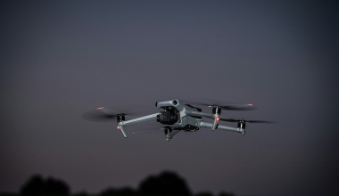
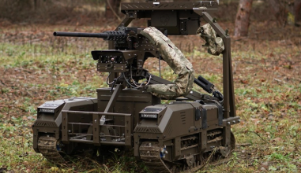

Õhudroonid
Mehitamata õhusõidukid võivad lennata hoonete, tänavate ja inimeste läheduses. Oluline on teada, kuidas ohu korral käituda.
Loe ohutusjuhendit →Autonoomsed robotid ja droonid võivad muuta kriisiolukorrad ettearvamatuks. VALMIS aitab sul valmistuda tehnoloogilisteks rünnakuteks, kaitsta oma lähedasi ja teada, kuidas ohu korral käituda.
Alusta valmistumist →Tehnoloogia areng on viinud sõjapidamise täiesti uuele tasemele, võimaldades mehitamata õhusõidukid ja robotid. Oluline on teada, kuidas nende läheduses turvaliselt käituda.

Mehitamata õhusõidukid võivad lennata hoonete, tänavate ja inimeste läheduses. Oluline on teada, kuidas ohu korral käituda.
Loe ohutusjuhendit →
Autonoomsed või kaugjuhitavad maismaarobotid võivad liikuda avalikes kohtades. Turvalisuse tagamiseks tuleb olla tähelepanelik.
Loe ohutusjuhendit →Mehitamata süsteemid võivad mõjutada sidet ja elektrivarustust. Oluline on teada, kuidas häirete korral turvaliselt käituda.
Loe ohutusjuhendit →VALMIS koondab ühte kohta tööriistad ja teadmised, mis aitavad sul oma majapidamise kriisiks ette valmistada.
Arvuta välja pere vajadused ja koosta majapidamise valmistumise plaan.
Koosta plaan →Koosta vajalike esemete nimekiri ja kontrolli, millised vahendid on sul juba olemas.
Kontrolli varusid →Õpi, milliseid varusid vajad, milleks neid kasutatakse ja kui palju neid koguda.
Uuri varusid →Arvuta välja pere vajadused ja koosta majapidamise valmistumise plaan.
Uuri varusid →Kui märkad ohtlikku või tundmatut robotit või drooni, hoia sellest eemale. Ära puuduta allakukkunud seadet. Mine võimalusel turvalisse siseruumi, järgi ametiasutuste korraldusi ning vajadusel kutsu abi numbril 112.
Alusta valmistumist →